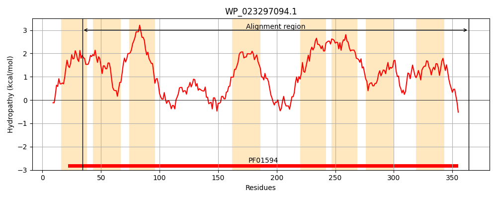
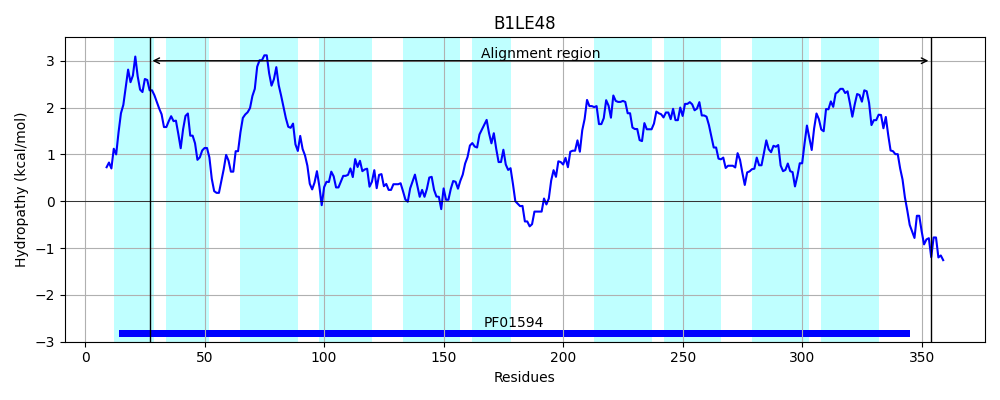
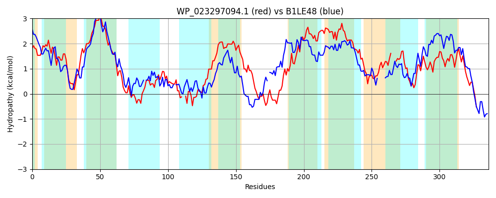

Hit Accession: B1LE48
Hit TCID: 2.A.86.2.1
Hit Description: gnl|BL_ORD_ID|1623 gnl|TC-DB|B1LE48|2.A.86.2.1 Inner membrane protein YdiK OS=Escherichia coli (strain SMS-3-5 / SECEC) GN=ydiK PE=4 SV=1
Mach Len: 336
e:0.000000
Query TMS Count : 8
Hit TMS Count: 10
TMS-Overlap Score: 7.900000
Predicted Substrates:None
BLAST Alignment:
Score: 395 , Bit scores: 156 bits, E-value: 1.8e-44, Alignment length: 336, Percentage identity: 29
Query: 34 CFTVFSPFINMMLWALILAVALYPLHQYFAGLLAGKQGLASVVLVLLGILLIVIPTVLMITSLAESASAMIDKMGSQSFTIPPPSSRIAALPIIGERLSALWMRASVDLPG--LLSNYRSQIGDIAKQFLSILASMSGGLIGFIISFIVSGIMMAWGAAGAISAQRIAIRITDENKGVTLTRLCTSTIRAVAQGVIGVALIQALLVGVIMLMASIPAVGIFFILALLLGIAQVPVILVTAPAIALMWSLGTHSTGMDIFYTILLI---VAGMADNVLKPLLLGRGVDAPMPVVLLGALGGMASNGILGMFLGATLLAIGYRIFMTWVNEGQPALPQ 364
C + PFI WA + +A +P+ + G++ LA +V+ LL +++ +IP L++ S+ + + +I + S T+P + + +P+IG +L A W +D+ G +++ R IG F+ A + ++ + + S ++ G A + A R+ +G L IRAVA GV+ AL+QA+L G+ + ++ +P + +L +L + Q+ + V PAI ++ G + G T+LL+ V G DNV++P+L+ G D P+ ++L G +GG+ + G++G+F+G LLA+ +R+F WV E P Q
Sbjct: 27 CLWIVQPFILGFAWAGTVVIATWPVLLRLQKFMFGRRSLAVLVMTLLLVMVFIIPIALLVNSIVDGSGPLIKAISSGDMTLPD-LAWLNTIPVIGAKLYAGWHNL-LDMGGTAIMAKVRPYIGTTTTWFVGQAAHIGRFMVHCALMLLFSALLYWRGEQVAQGIRHFATRLAGV-RGDAAVLLAAQAIRAVALGVVVTALVQAVLGGIGLAVSGVPYATLLTVLMILSCLVQLGPLPVLIPAIIWLYWTGDTTWG-----TVLLVWSGVVGTLDNVIRPMLIRMGADLPLILILSGVIGGLIAFGMIGLFIGPVLLAVSWRLFAAWVEEVPPPTDQ 354 | Protein Hydropathy Plots: |
|---|
|  |  |
Pairwise Alignment-Hydropathy Plot:
|
|---|
|  |